Resumen de los Mangas
Capitulo 1 - Sueño
La historia comienza con el partido final del torneo de la prefectura en el Campeonato Nacional de Fútbol de Escuelas Secundarias. Yoichi Isagi (El protagonista), un delantero de segundo año de secundaria, pierde su oportunidad de avanzar a la etapa nacional después de optar por pasar el balón frente a la portería, sin embargo, recibe una invitación para un nuevo proyecto llamado ''Bluelock'' en el cual la primera prueba serán ''Las atrapadas''.
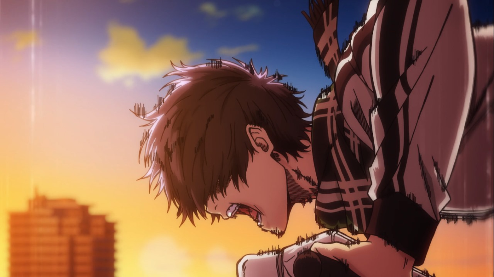Capitulo 2 - Mostruo
En el segundo capítulo de la primera temporada de Blue Lock, Isagi Yoichi se enfrenta a Megurum Bachira en un partido de fútbol dentro del programa Blue Lock. Isagi intenta superar a Bachira, pero este último demuestra ser un oponente formidable, luego de eso da inicio el primer partido del Equipo Z.
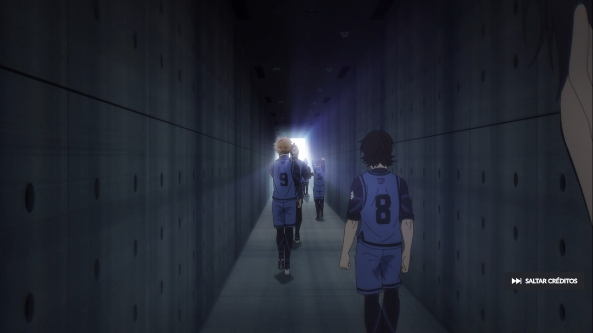Capitulo 3 - Cero
se lleva a cabo el primer partido en equipo, donde los jugadores, Equipo Z contra Equipo X donde deben trabajar juntos para lograr la victoria. Durante el partido, Isagi Yoichi intenta encontrar su lugar en el equipo y demostrar su habilidad. Mientras tanto, Barou, un jugador alto y atlético, se destaca en el campo con su velocidad y habilidad para marcar goles.
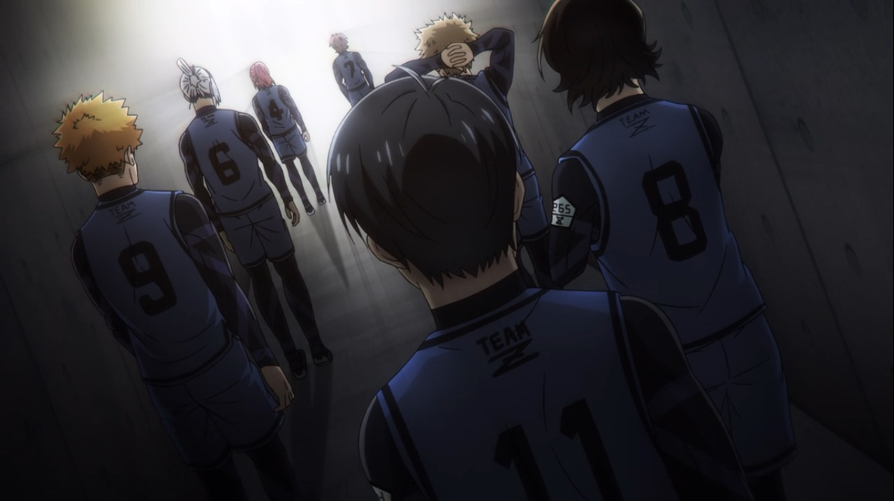Capitulo 4 - Premonición e intuición
El capitulo comienza con todos reflexionando su derrota y como una mas les podría costar su eliminación, e ahí cuando todos deciden decir sus habilidades, menos Chigiri. Comenzando con el siguiente partido, el Equipo Z contra el Equipo Y.
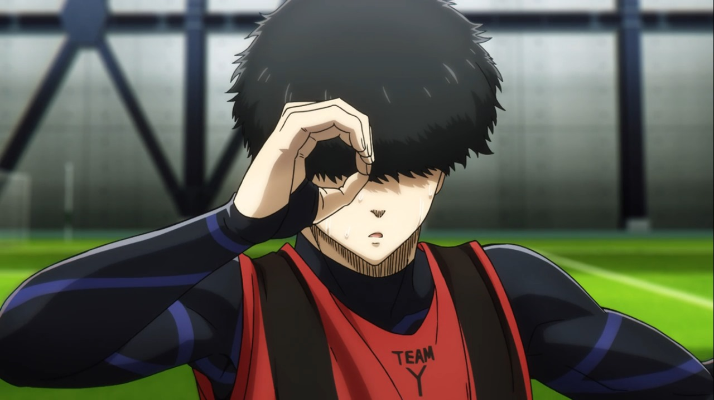Capitulo 5 - Para renacer
El partido va empate a uno y el tiempo de la segunda parte sigue avanzando hasta la primera victoria del equipo Z Con el primer gol de Isagi, poniéndolo a el y al equipo Z en una nueva clasificación Por otro lado Chigiri sigue sin decir su arma hasta que finalmente decide decir que es lo que le pasaba.
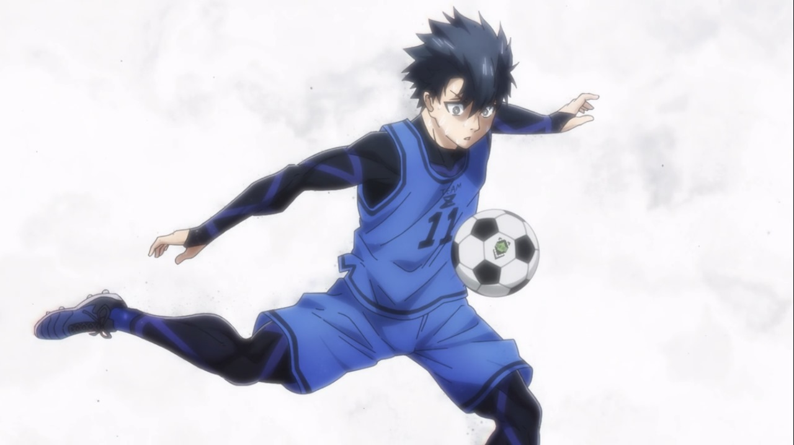Capitulo 6 - Lo siento
Va a comenzar el siguiente partido y los chicos ya están preparados y tienen un nuevo plan para jugar contra el Equipo W parece que les está funcionando a la perfección. Sin embargo no sabían que es lo que estaba planeando uno de ellos dejando al equipo Z en una terrible desventaja.
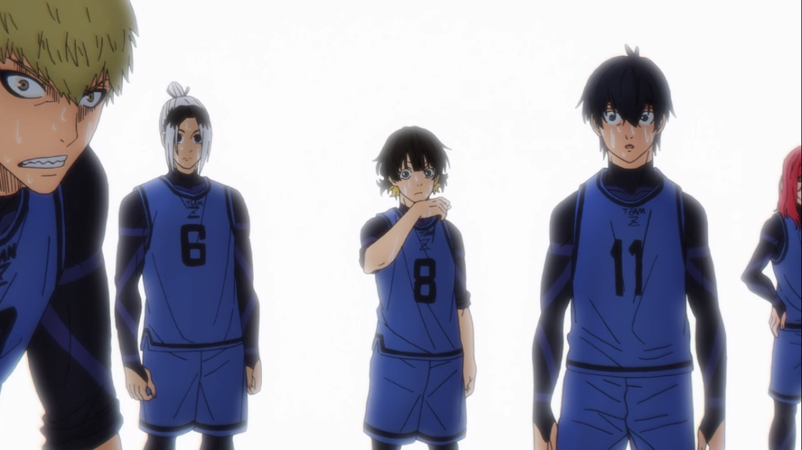Capitulo 7 - Subidón
La situación se ha torcido por completo y ahora el Equipo Z deberá jugar en inferioridad numérica. No obstante, todos se olvidan de un jugador, uno que no demostró valentía al principio hasta que finalmente lo acabaron despertando y finalmente pudo demostrar de que estaban echa sus piernas con su velocidad.
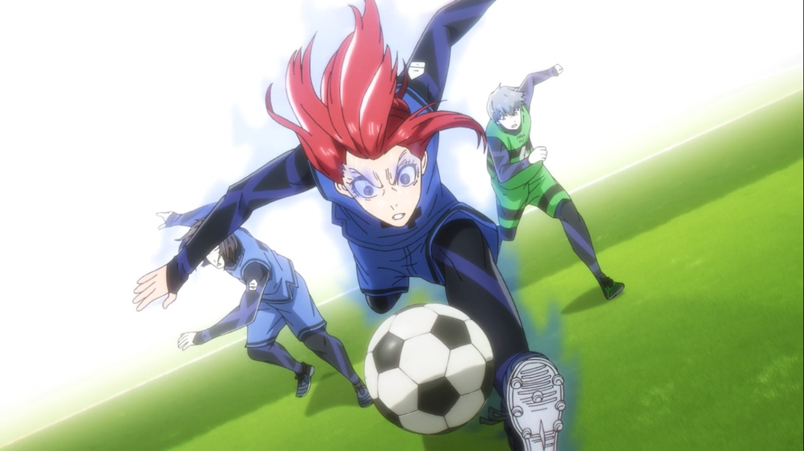Capitulo 8 - La fórmula para marcar gol
Tras sobrevivir el último partido gracias a Hyoma Chigiri, les espera un duelo vital contra los líderes del edificio cinco: el Equipo V. conformado por 3 lideres Nagi,Reo y Zantetsu, si eso fuera poco, deberán jugar con 10 jugadores nada más en un partido definitivo.
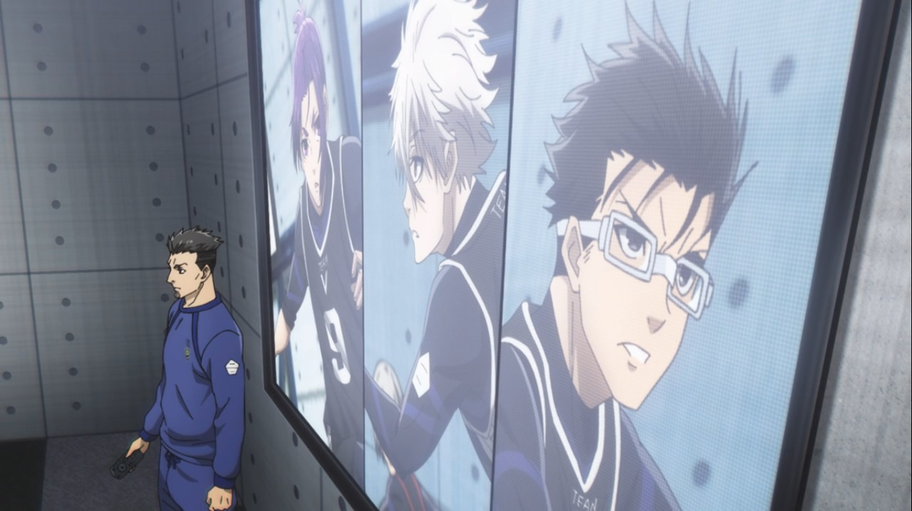Capitulo 9 - El despertar
El partido se pone en contra de los chicos del Equipo Z Solo al comenzar y son conscientes de que jugando como siempre no podrán vencer a sus rivales ni en sueños, asi que tendrán que evolucionar todos y cada uno de ellos lo que se llama ''Despertar''
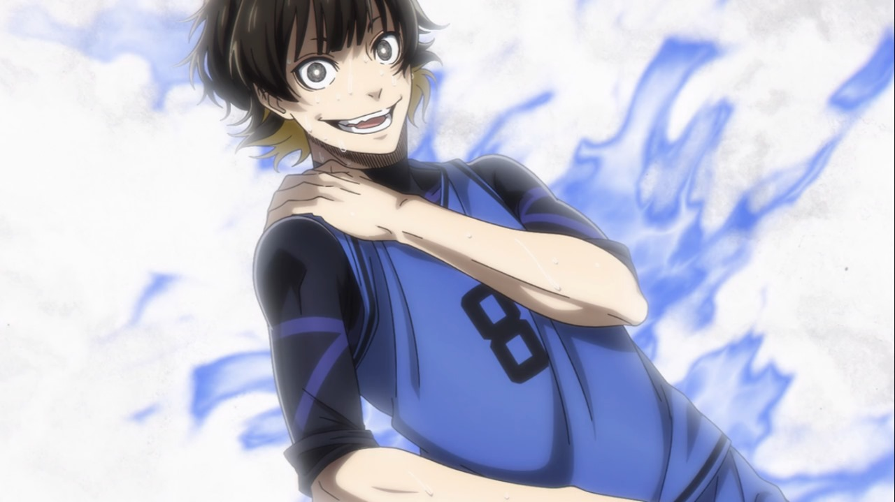Capitulo 10 - Que se quede así
De a poco todo el Equipo Z va evolucionando y puliendo aún más sus habilidades, pero no contaban que eso también podría producirse en el otro equipo, tanto como a Nagi quien no duda en usar su mejor táctica de control contra el equipo, Sin embargo no contaban que alguien podría redimirse de su error.
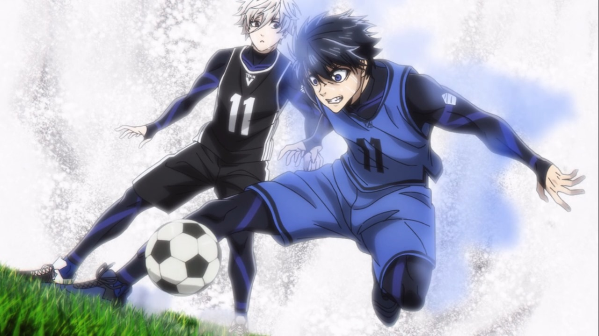Capitulo 11 - La última pieza
Luego de que Isagi despertara y encontrara la ultima pieza dándole la victoria al Equipo Z y la primera derrota del Equipo V. Lo dieron todo y ganaron, asi la primera fase pasaron destruyendo rivales y a otros los han despertado, ahora el siguiente nivel los hara luchar solos asi que aquí se separan, pero no olvidaran que el Equipo Z es tremendo y... ¡Se verán del otro lado!
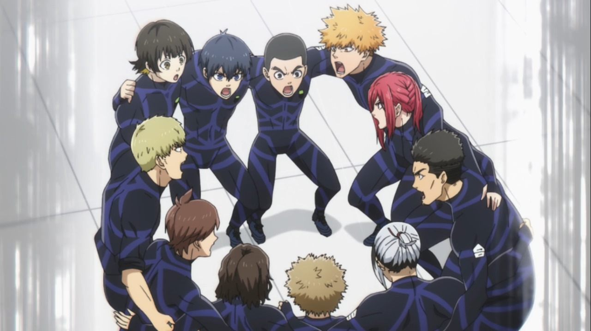Capitulo 12 - La segunda fase
Yoichi Isagi empieza participando en la segunda fase, donde el nivel de dificultad se va a disparar a niveles insospechados. Ahora necesitan pasar una prueba de penales para después formar un equipo con tres personas para seguir avanzando e incrementar el nivel hasta que sean cinco participantes.
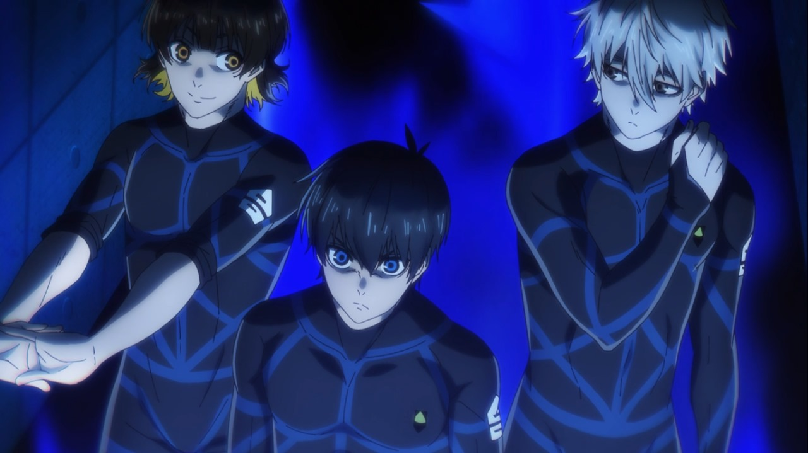Capitulo 13 - Top 3
En esta nueva fase de Blue Lock, Isagi, Bachira y Nagi se medirán a un equipo formado por los tres mejores jugadores de la fase anterior también conocido como el top 3 y el ego de Isagi hablo y le piensa responder en un partido definitivo y el que gane tomara un miebro del equipo perderor.
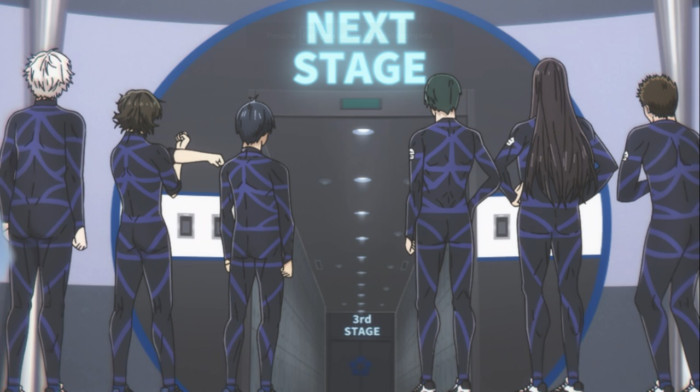Capitulo 14 - Genios y mediocres
Tras perder el primer partido, Isagi y Nagi tienen que ver cómo siguen adelante. Y, para su sorpresa, se encuentran con los miembros de otro equipo perdedor, reencontrándose con Barou y otro mas, asi uno de ellos tomara la iniciativa combatiendo contra el rey.
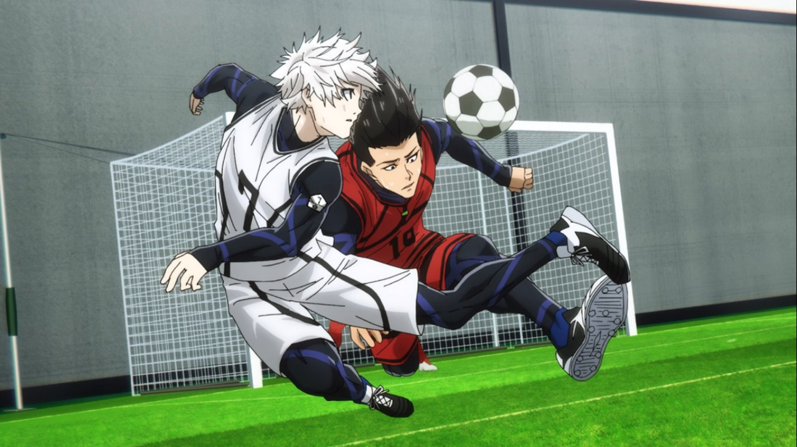Capitulo 15 - Asimilación
Yoichi está empezando a ver que es un mediocre, tal y como le ha dicho Naruhaya. Pero, lejos de bajar los brazos, buscará un nuevo modo de seguir evolucionando en este partido 2 contra 2 tratando de encontrar un punto ciego y se darán cuenta que el destino no siempre es amable.
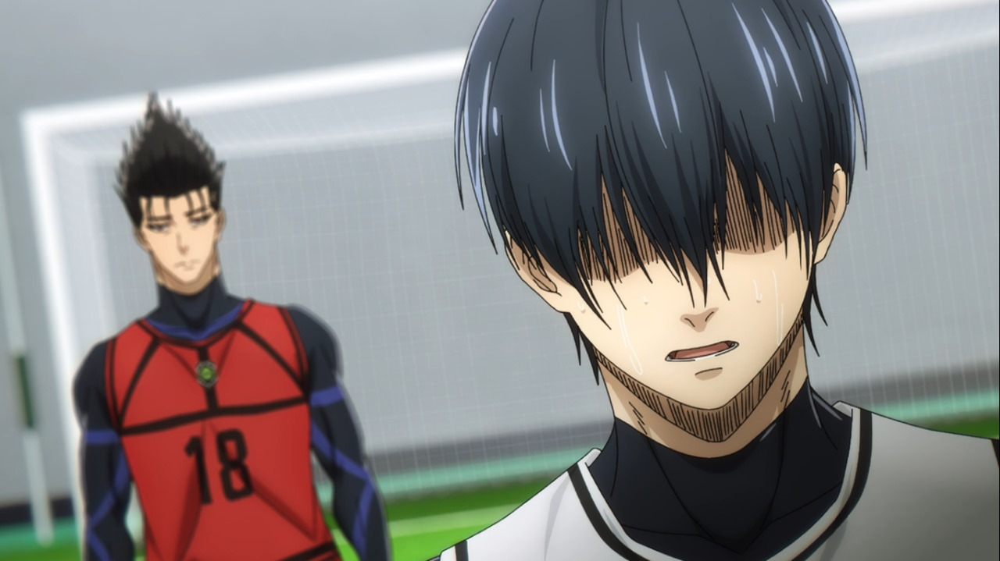Capitulo 16 - Fusión triple
La llegada de Barou al equipo parece ser un poco problemática debido a su egoísmo y su personalidad tan estrica y meticulosa, pero no deja de ser un genio con el balón, por otro lado los antiguos compañeros están molestos por no elegirlos antes y jugaran con un ego por delante.
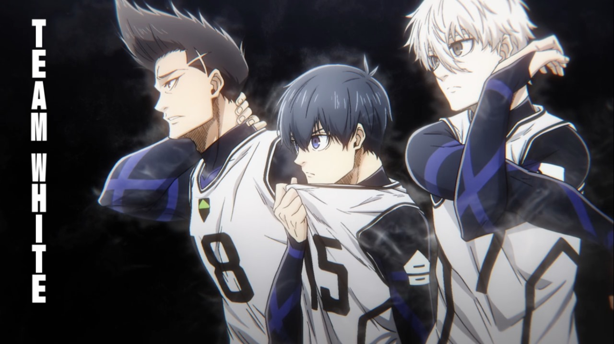Capitulo 17 - Paquete
El equipo de Reo, Chigiri y Kunigami es realmente bueno, por lo que Isagi tendrá que encontrar un modo de hacer encajar a Barou en su equipo, sin embargo este es muy terco y prefiere jugar lo mas egoísta que puede pero Nagi se da cuenta que para vencer este partido tendrán que devorar a Barou.
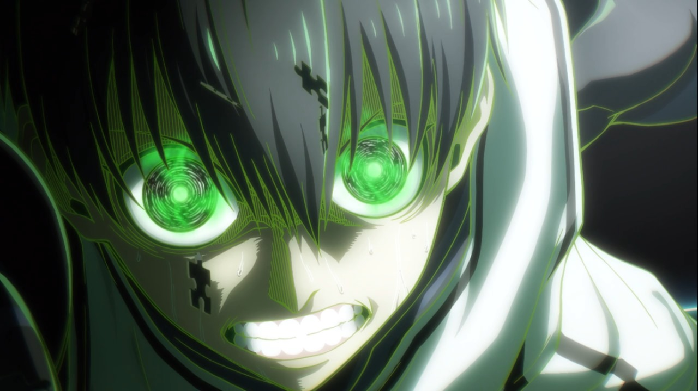Capitulo 18 - El escenario de la estrella
El Equipo Blanco está contra las cuerdas e Isagi tiene claro que no quiere contar con Barou y este ultimo se está viendo cada vez más desplazado, y eso no le gusta nada, es su turno de despertar y devorar al mas egoísta sabe que son unos héroes y el un antagonista, trataran de encontrar la victoria en este partido.
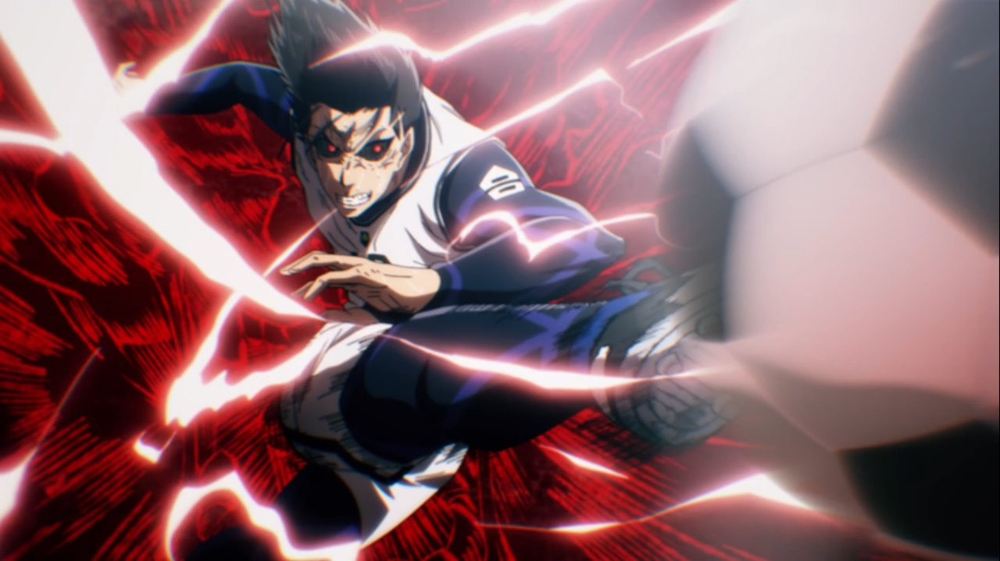Capitulo 19 - Dancing Boy
El equipo de Isagi elige al jugador del equipo rival para prepararse para el partido contra el equipo de Rin y recuperar a Bachira, Este ultimo que antes fue un niño que amaba el balón mas que nadie, lo trataban como un bicho raro y de la nada empezó a jugar con un monstruo.
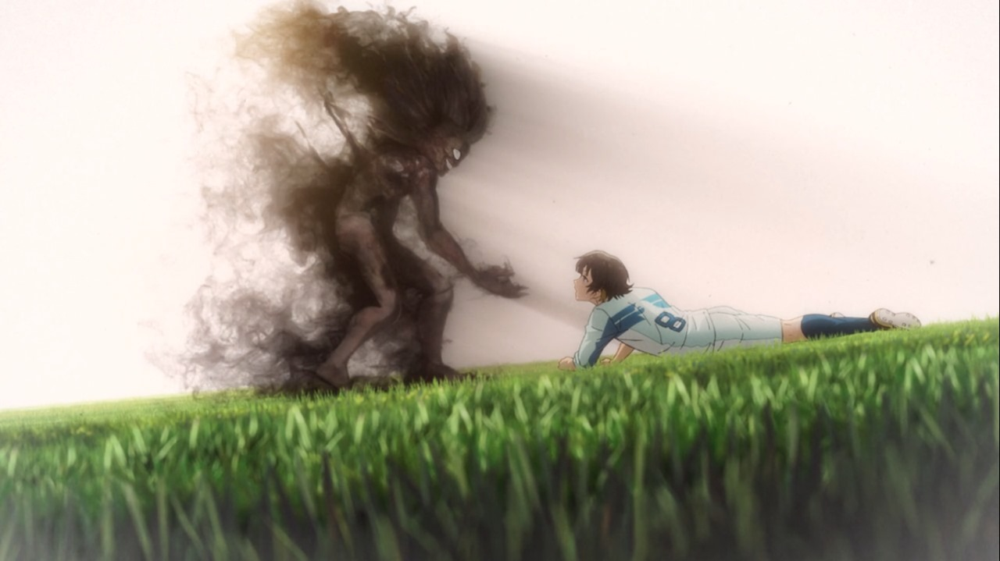Capitulo 20 - Superjuego combinado
El equipo de Isagi ya está formado y se va a enfrentar al de los tres mejores junto a Bachira, pidiéndoles la revancha, ahora con el equipo bien coordinado se encargaran de derrotar al equipo de Rin, quien tiene un talento enorme. ¿Quién saldrá vencedor en este partido de revancha?
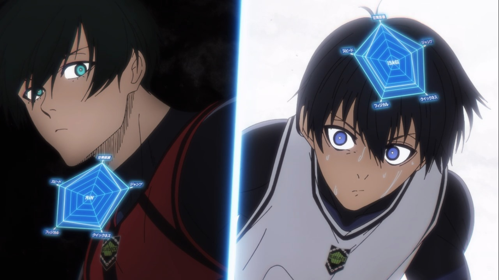Capitulo 21 - No estoy ahí
El nivel que se está mostrando en el partido es alto, muy alto.. Tanto es así que hasta Bachira empieza a tener dudas de estar al nivel de Isagi y Rin, creyendo que si pierde o no muestra todo su poder no lo van a escoger a un punto que Barou se da cuenta y comienza a despertar denuevo.
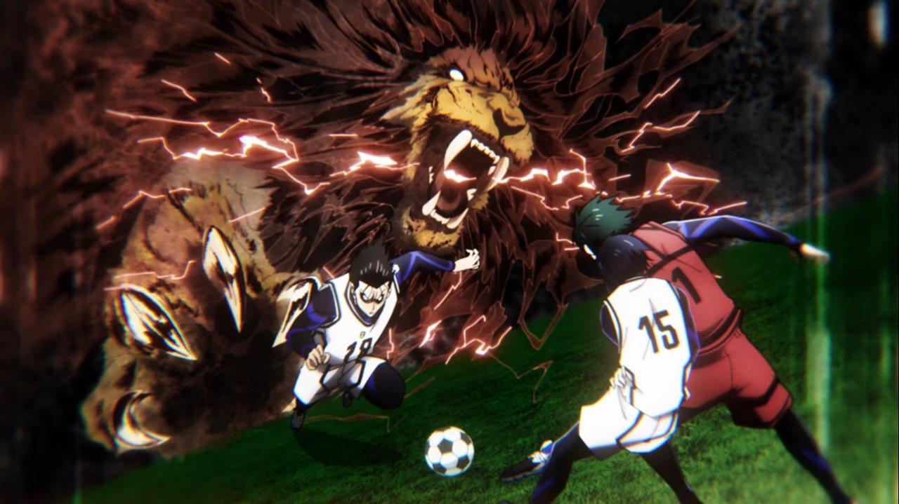El partido está cada vez más cerca de terminar, pero Bachira sigue viendo que sobra y que no aporta nada en el encuentro, al mismo tiempo que todos ya se andan agotando, El sueño del monstruo pronto se podrá cumplir y lograra despertar.
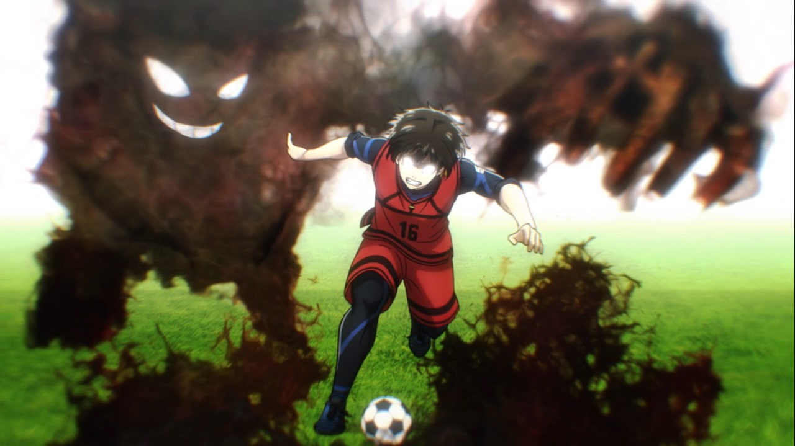Capitulo 23 - Suerte
El sueño de Bachira era dejar de estar solo y a falta de un monstruo aquí encuentra dos pero la ambición no es tan fuerte creyendo otra vez que si pierde no lo escogerán, este quiere dejar de escuchar esa voz interior queriendo ser independiende y asi quiere concluir este partido. Pero ego tiene una sorpresa mas, los que pasaron la fase tendrán el honor de enfrentar al Top Mundial.
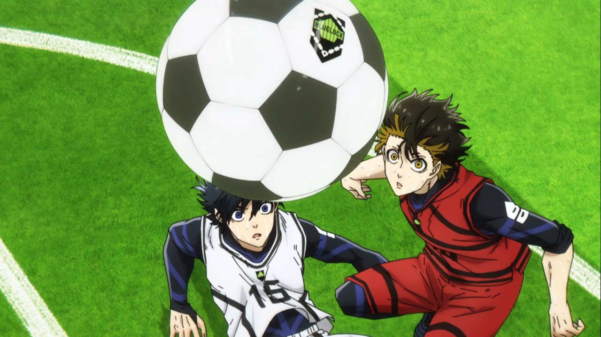Capitulo 24 - Ha llegado la hora
El partido contra el Quinteto Mundial es terriblemente desigual y caen derrotados sin paliativos. Mientras, en las altas esferas está pasando algo, y no es bueno, con un golpe de realidad no todos tienen la suerte de poder llegar hasta la parte final Solo los sobrevivientes de esta fase se enfrentaran a la Sub-20 de Japón y jugar en un partido que decidirá el destino de Bluelock.
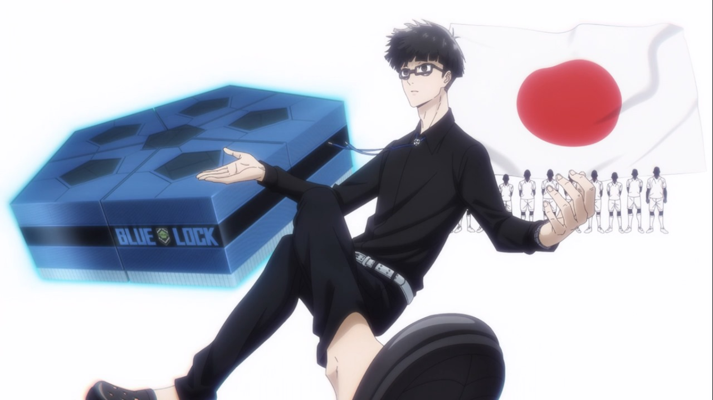